DENTISTERIE GÉNÉRALE, IMPLANTS & INVISALIGN — CHOMEDEY · LAVAL
Croissance de la patientèle
Plus de trente ans à Laval, une dentiste qui répond elle-même à sa ligne d’urgence, et une technologie que la plupart des patients n’ont jamais vue. Un plan pour montrer tout ça à Chomedey — et le transformer en nouveaux patients chaque semaine.
SEPTEMBRE 2026MANDAT OCT. – DÉC.TGS · 111 CHABANEL OUEST, MONTRÉAL
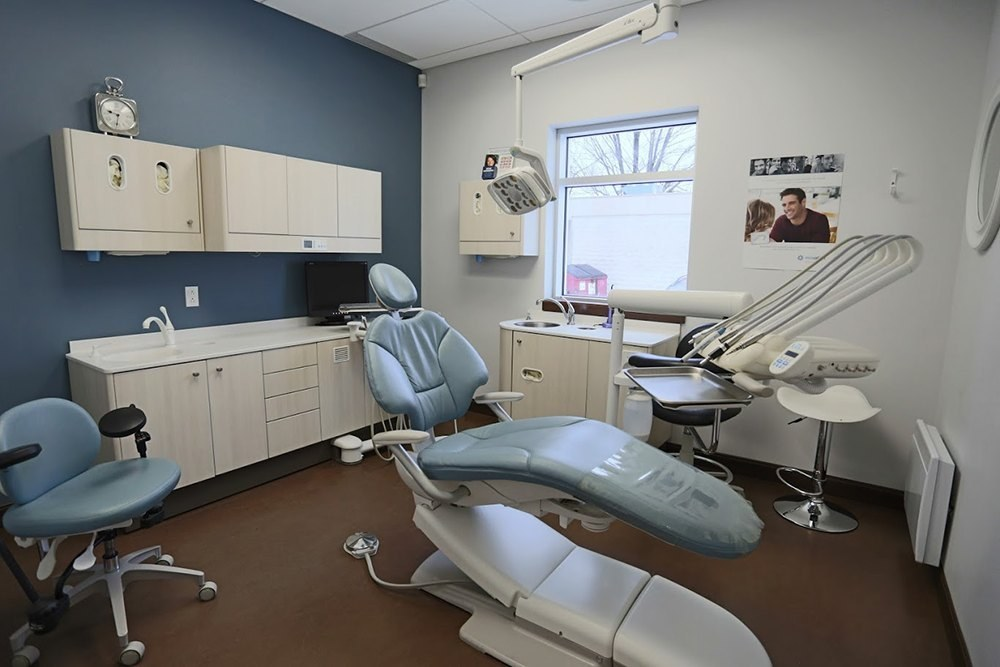
L’occasion
Nancy Beaudoin × TGS
Trente ans. Un seul numéro.
La Dre Nancy Beaudoin a repris la clinique en 1999, l’a déménagée rue Robinson en 2011 — et répond encore elle-même aux urgences de ses patients, de jour comme de nuit.
Trois dentistes, une équipe qui parle français, anglais, arabe, espagnol, roumain et allemand, et CEREC, iTero et l’impression 3D sous un même toit. Vos pubs Google amènent déjà des gens sur votre site. Ce plan ajoute l’autre moitié : le fil d’actualité, où l’on choisit à qui faire confiance bien avant de chercher.
Rien ne doit changer dans les soins. Ce qui doit changer, c’est le nombre de Lavallois qui ont rencontré la clinique avant d’en avoir besoin.
La confiance se bâtit avant le mal de dents.
NOTRE TRAVAIL : LA BÂTIR TÔT
Sur Instagram
593 abonnés · 3 publications par semaine · 0 à 2 j’aime par publication · aucune vidéo encore
À Laval
Plus de 30 ans — propriétaire de la clinique depuis 1999
Heures
Les lundis jusqu’à 20 h, un mercredi sur deux aussi — plus une ligne d’urgence 24/7
Services
Soins généraux, implants et greffes, Invisalign, couronnes CEREC, apnée du sommeil, urgences
PRÉPARÉ POUR DENTISTERIE NANCY BEAUDOIN — STRATÉGIE DE CROISSANCE DE LA PATIENTÈLE
02
01 — L’objectifNancy Beaudoin × TGS
L’objectif SMART
Un seul objectif derrière chaque vidéo, chaque campagne et chaque rapport.
L’objectif, en une ligne
Remplir l’horaire de nouveaux patients de Chomedey et de tout Laval, transformer des années de « un jour » en consultations implants et Invisalign, et relier chaque rendez-vous à la campagne qui l’a amené.
Le plan en un coup d’œil
S
Spécifique — de nouveaux patients, près de la clinique
Des adultes et des familles de Chomedey, de Laval-des-Rapides et du reste de Laval qui ont besoin d’un dentiste maintenant — ou qui vivent depuis des années avec une dent manquante ou un sourire croche.
M
Mesurable — demandes, premières visites, traitements
Quatre chiffres clés : les demandes de nouveaux patients issues des campagnes, les premières visites réservées, le coût par nouveau patient et les traitements acceptés — consultations implants et Invisalign comprises.
A
Atteignable — bâti sur ce qui existe
Trois dentistes, une consultation gratuite avec radiographie panoramique, le blanchiment inclus avec Invisalign, les lundis soir et la prise de rendez-vous en ligne déjà en place.
R
Réaliste — un patient vaut des années
Un nouveau patient revient deux fois par année, pendant des années — et un seul cas d’implant peut couvrir un mois complet de ce mandat.
T
Temporel — d’octobre à décembre
Trois mois, révisés chaque mois — avec les garanties d’assurance de l’année utilisées et janvier rempli avant les Fêtes.
Ce à quoi nous nous engageons. Le contenu, les campagnes, le suivi et les rapports, c’est nous. Ce qui se passe dans le fauteuil — l’examen, le plan de traitement, le oui — est mesuré, pas promis.
Filmer la clinique→Lancer 4 campagnes→Demande de consultation→Première visite→Traitement accepté
Préparé pour Dentisterie Nancy Beaudoin — Stratégie de croissance de la patientèle
03
02 — Le parcours du patientNancy Beaudoin × TGS
Du fil au fauteuil
Choisir un dentiste n’est pas un coup de tête — ce sont des mois de « faudrait bien que j’appelle » avant un seul rendez-vous. Le plan couvre tout le cycle, pas un seul clic.
Un patient
PUIS TOUTE LA FAMILLE
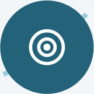
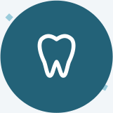
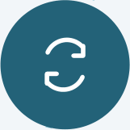
On le voit
Quelqu’un voit défiler une couronne fraisée sur place, le scan 3D, ou la dentiste qui répondrait à minuit.
On demande
On touche « Réserver » et on arrive sur votre page de consultation — nom, téléphone, raison de la visite, en moins d’une minute.
C’est mesuré
Chaque demande sur votre site est reliée à la campagne, au placement et à la pub qui l’ont lancée.
La première visite
Une radiographie panoramique et un prix final avant tout traitement. L’équipe fait ce qu’elle fait déjà de mieux.
Retour et recommandation
Six mois plus tard, ils reviennent — avec la famille. Le prochain voisin entend parler de vous au souper.
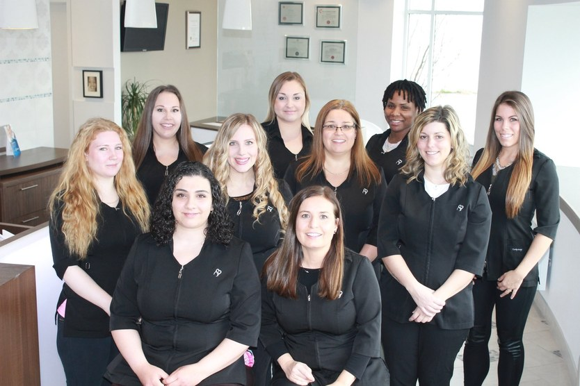
Votre expérience est l’avantage. La plupart des pubs dentaires, c’est un sourire de banque d’images et un numéro de téléphone. Trente ans dans la même ville, une dentiste qui forme d’autres dentistes en implantologie, et une réception qui parle la langue de vos patients — c’est une preuve qu’aucun concurrent ne peut copier. On s’assure simplement que Laval la voie.
Préparé pour Dentisterie Nancy Beaudoin — Stratégie de croissance de la patientèle
04
03 — De la pub au rendez-vousNancy Beaudoin × TGS
De la pub au rendez-vous
Ce qu’une personne de Laval voit, touche et remplit sur Instagram ou Facebook — en moins d’une minute.
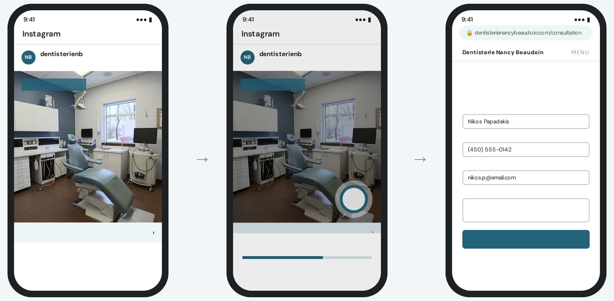
Accueil
Accueil
Commandité
Commandité
PREMIÈRE VISITE
PREMIÈRE VISITE
Réserver
Réserver
dentisterienb Une dent manquante? Consultation gratuite — radiographie panoramique et prix final avant de commencer. Chomedey, ouvert les lundis jusqu’à 20 h.
Ouverture de dentisterienancybeaudoin.com…
Réservez votre consultation
Dites-nous ce qu’il vous faut — on confirme l’heure et l’estimation avant votre visite.
Nom
Téléphone
Courriel
Raison de votre visite
Dent manquante — consultation implant. Le lundi soir me convient.
Demander ma consultation
1Voir la pub
Un aperçu de 30 secondes de la clinique — et de la dentiste derrière — apparaît entre les publications d’amis et de la famille.
2Toucher « Réserver »
Un seul toucher ouvre votre site — pas de messages privés, pas d’appels manqués pendant les heures de travail.
3Envoyer la demande
Une nouvelle page de consultation sur votre site, suivie par le pixel Meta et reliée à vos rendez-vous en ligne. Elle arrive directement à la réception.
Même pub, trois placements — une seule page de consultation
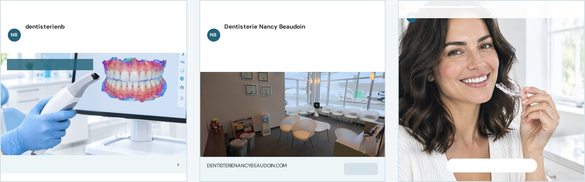
FIL INSTAGRAM
FIL FACEBOOK
STORIES INSTAGRAM
Commandité
Commandité
NUMÉRISÉ, PAS MOULÉ
Réserver
Ouvert les lundis jusqu’à 20 h. Nouveaux patients de tous âges bienvenus à Chomedey.
Les lundis jusqu’à 20 h — Laval
Réserver
Invisalign — avec le blanchiment inclus.
Consultation gratuite ›
Pub affichée→Toucher « Réserver »→Page de consultation→Demande envoyée→Attribuée à la pub
Préparé pour Dentisterie Nancy Beaudoin — Stratégie de croissance de la patientèle
05
The Golden Standard · Dans le quartierNancy Beaudoin × TGS
PREMIUM · EXCLUSIF À THE GOLDEN STANDARD · 4 000 $ / MOIS
100 dents. Un quartier.
Cent cartes « Dites WOW! » — une dent de bande dessinée qui s’ouvre sur 100 $ de soins à la clinique — cachées partout à Chomedey, dans les parcs, les cafés et sur les babillards communautaires. Qui en trouve une la publie, identifie la clinique et l’apporte à sa première visite.
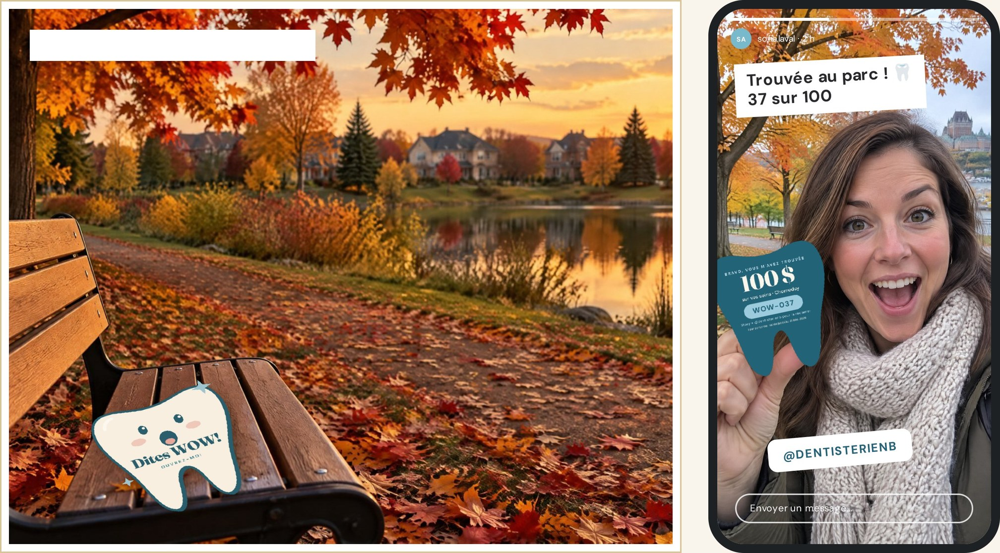
DENT 037 · TROUVÉE À CHOMEDEY
01
Cachées à Chomedey
TGS dépose 100 cartes numérotées dans le quartier — avec la permission des commerces du coin — et filme chaque dépôt pour l’aperçu.
02
Trouvée, publiée, identifiée
Pour la réclamer, on publie une story qui identifie @dentisterienb. Chaque story montre la clinique à ses propres abonnés — une portée gratuite qu’on peut compter.
03
Apportée au fauteuil
Chaque dent cache son propre code, de WOW-001 à WOW-100 — nommé d’après la promesse de la clinique : un sourire qui fait dire WOW.
La campagne derrière. L’une des quatre campagnes The Golden Standard porte la chasse : aperçus, mises à jour hebdomadaires « trouvées jusqu’ici » et repartage de chaque trouvaille — la carte et l’endroit, jamais un avis sur les soins. Les 100 crédits sont offerts par la clinique; les règles (une par personne, valide jusqu’au 31 décembre 2026) sont imprimées dans chaque carte.
Préparé pour Dentisterie Nancy Beaudoin — Stratégie de croissance de la patientèle
06
04 — Le public cibleNancy Beaudoin × TGS
À qui on s’adresse
Trois profils de patients — tous adultes — rejoints chacun différemment.
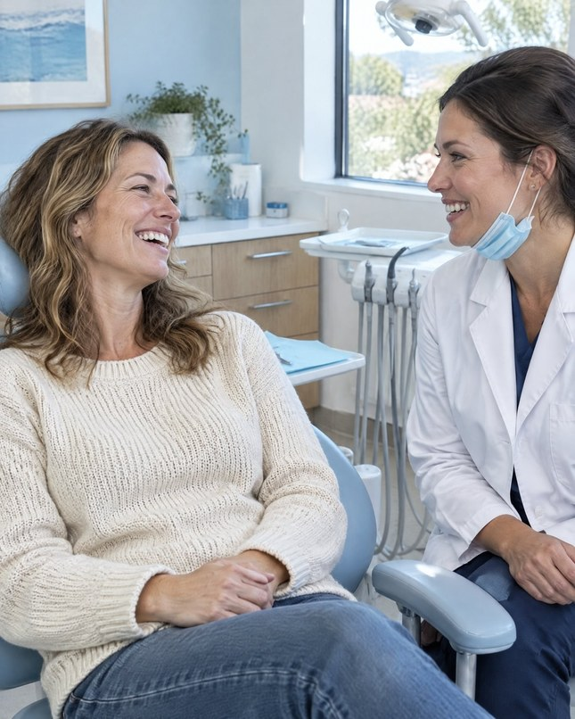
Le candidat à l’implant
Il lui manque une dent, ou son pont a fait son temps. A remis ça à plus tard parce que personne ne voulait dire le prix tout haut.
Où le rejoindre : fil Facebook, rayon autour de la clinique, la consultation gratuite avec un prix final dès le départ
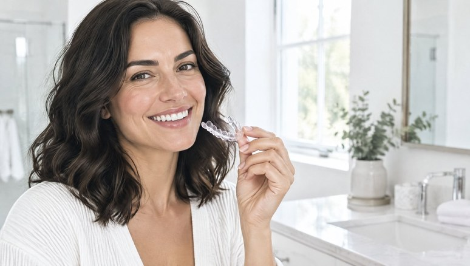
Celle qui planifie son sourire
Pense à se faire redresser les dents depuis des années — veut voir le résultat d’abord, et savoir que le blanchiment est inclus.
Où la rejoindre : Reels et Stories Instagram, le scan iTero, le coût mensuel expliqué d’avance
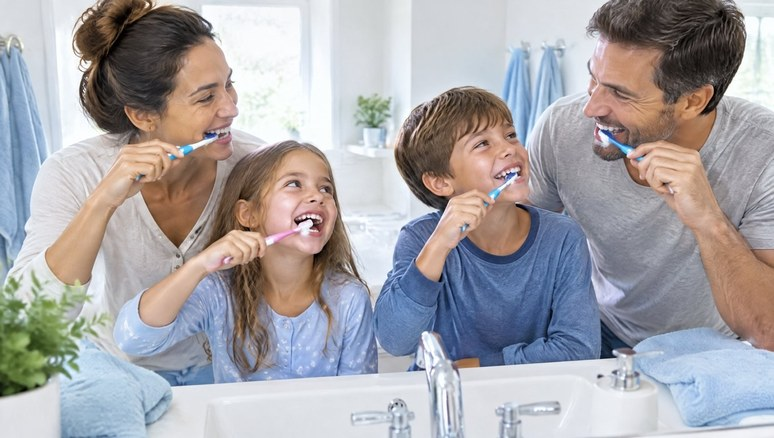
L’organisatrice de la famille
Gère les rendez-vous de toute la maison, dès la première visite de bébé. Veut une plage en soirée, la facturation directe — et aucune surprise.
Où la rejoindre : fil Facebook, contenu couverture et coûts, reciblage de tous ceux qui ont visité le site
CE QUI COMPTE POUR EUX
Un dentiste qu’on peut joindre quand ça fait mal
Connaître le prix final avant le début des travaux
Des heures qui conviennent — lundis soir compris
Être compris — dans sa propre langue
OÙ ON LES REJOINT
Fil, Reels et Stories Instagram
Fil Facebook, rayon autour de la clinique
Un toucher de la pub à votre page de consultation
Reciblage et audiences similaires des visiteurs
Pourquoi la vidéo fonctionne
Une liste de services demande de faire confiance à un nom. Une vidéo de 30 secondes montre la dentiste, le scanner au lieu du porte-empreinte, la couronne fraisée sur place. La première obtient « j’appellerai un jour ». La seconde, un rendez-vous ce soir.
Préparé pour Dentisterie Nancy Beaudoin — Stratégie de croissance de la patientèle
07
05 — Le contenuNancy Beaudoin × TGS
Ce qu’on va créer
20 contenus par mois — 12 vidéos, 8 publications — filmés à la clinique, sous-titrés en français et en anglais.
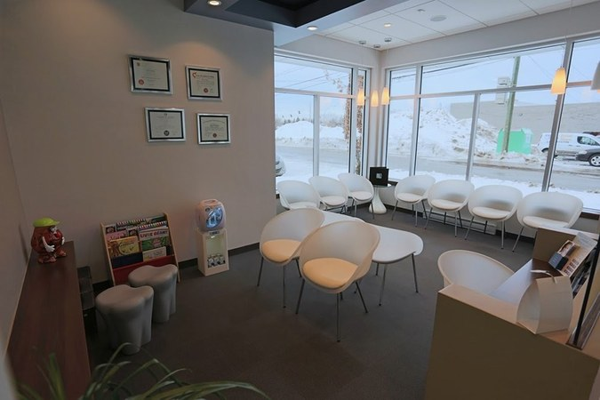
DANS LA CLINIQUE
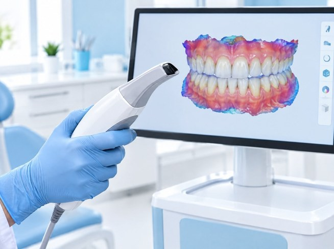
LES IMPLANTS ET VOTRE SOURIRE
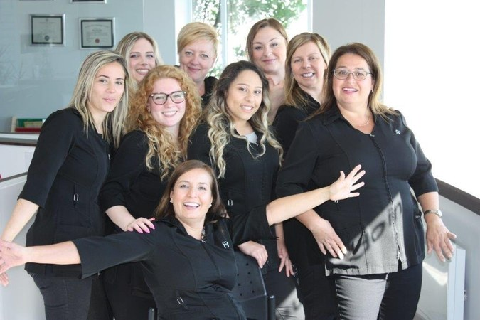
RENCONTREZ L’ÉQUIPE
Photos tirées de votre site Web. Chaque contenu final est filmé à la clinique; chaque patient à l’écran donne un consentement écrit et révocable.
Dans la clinique
4 / MOIS
La clinique de la rue Robinson — et la technologie que les patients n’attendent pas : CEREC, iTero, impression 3D, laser.
La visite de la cliniqueUne couronne, fraisée sur placeLa chasse est ouverte
Rencontrez l’équipe
4 / MOIS
Trois dentistes, trois hygiénistes et une réception qui cumulent des décennies d’expérience — et six langues entre eux.
Rencontrez la Dre BeaudoinMurielle : 30 ans en dentisterieOn parle votre langue
Les implants et votre sourire
4 / MOIS
Implants, greffes et Invisalign expliqués — le scan, le plan, le prix final — pour que la décision parte de ce qu’ils verront.
Un implant, étape par étapeInvisalign + blanchimentLe scan iTero
Couverture et coûts
4 / MOIS
Assurances, Dentoplan, financement et consultation gratuite — expliqués avant la visite, chacun relié à la page de consultation.
Utilisez vos garanties 2026Pas d’assurance? DentoplanPaiements mensuels
Demandez au dentiste
4 / MOIS
Des réponses courtes et honnêtes aux questions que les gens tapent dans Google à minuit.
Mal de dents à minuit?Ronflement et apnée du sommeilPeur du dentiste?
Préparé pour Dentisterie Nancy Beaudoin — Stratégie de croissance de la patientèle
08
06 — Le calendrier de contenu · Mois 1Nancy Beaudoin × TGS
Octobre 2026
20 contenus par mois — 12 vidéos, 8 publications — du lundi au vendredi. La bande au-dessus de chaque semaine indique la campagne que ce contenu alimente.
Dans la cliniqueRencontrez l’équipeImplants et sourireCouverture et coûtsDemandez au dentisteLa chasse aux dents
LUNDIMARDIMERCREDIJEUDIVENDREDI
Semaine 1A · La chasse aux 100 dents — Lancement · 100 cartes cachées partout à ChomedeyTous les gens du coin
1 oct.VIDÉO
Visite de la clinique
Rue Robinson, de la porte au fauteuil en 40 secondes
2 oct.VIDÉO
La chasse est ouverte
100 dents, 100 $ chacune, cachées tout près
Semaine 2B · Votre première visite — Demandes · Instagram et Facebook vers votre page de consultationNouveaux patients · Familles
5 oct.VIDÉO
Ouvert jusqu’à 20 h ce soir
Les lundis soir à la clinique
6 oct.PUBLICATION
Votre première visite
Carrousel : de l’arrivée au départ, étape par étape
7 oct.VIDÉO
Rencontrez la Dre Beaudoin
30 ans à Laval, et pourquoi elle répond encore
8 oct.VIDÉO
Mal de dents à minuit?
Quoi faire, et qui répond
9 oct.PUBLICATION
Utilisez vos garanties 2026
Avant le renouvellement de votre régime
Semaine 3C · Implants et Invisalign — Demandes · consultations par Reels et StoriesCandidats implants · Sourires à planifier
12 oct.
Action de grâce
Congé · aucune publication
13 oct.VIDÉO
Un implant, étape par étape
Du scan à la couronne, en 60 secondes
14 oct.VIDÉO
Une couronne, fraisée sur place
CEREC, en une ou deux visites
15 oct.PUBLICATION
La consultation gratuite
Radiographie panoramique et prix final
16 oct.VIDÉO
Invisalign + blanchiment
Inclus, pas en supplément
Semaine 4D · Encore indécis — Reciblage · spectateurs, profil et visiteurs du siteLes trois
19 oct.VIDÉO
On parle votre langue
Six langues, une seule clinique
20 oct.PUBLICATION
Cinq questions avant un implant
Vos questions, nos réponses
21 oct.VIDÉO
Ronflement et apnée
Quand un dentiste peut aider
22 oct.PUBLICATION
Pas d’assurance?
Dentoplan, expliqué
23 oct.VIDÉO
Le scan iTero
Fini les porte-empreintes
Semaine 5La meilleure campagne amplifiée — Les quatre actives · le budget suit les rendez-vousLes trois
26 oct.VIDÉO
Peur du dentiste?
Comment l’équipe prend son temps
27 oct.PUBLICATION
Trouvées jusqu’ici
Où les dents sont apparues
28 oct.PUBLICATION
Rencontrez les hygiénistes
Sarah, Loredana et Océane
29 oct.PUBLICATION
Paiements mensuels
Le financement, simplement
30 oct.
Rapport mensuel
Résultats d’octobre et plan de novembre
Conforme au code de l’ODQ. Chaque contenu est vérifié avant sa mise en ligne : aucun témoignage ni avis dans les pubs, aucune comparaison avec d’autres cliniques, « dentiste généraliste » après le nom de chaque dentiste, des offres présentées avec leurs conditions et une date de fin, et une copie de chaque pub conservée au dossier.
Préparé pour Dentisterie Nancy Beaudoin — Stratégie de croissance de la patientèle
09
07 — Les campagnesNancy Beaudoin × TGS
Des campagnes tirées du contenu
Chaque vidéo devient aussi une pub sur Instagram ou Facebook. Ce qui performe reçoit le budget, et chaque clic arrive sur votre page de consultation — le coût de chaque nouveau patient est donc suivi dès le premier jour.
A · GOLDEN STANDARD
La chasse aux 100 dents
Stories et Reels Instagram · fil Facebook
Public : tout le monde autour de la clinique
Aperçus, mises à jour « trouvées jusqu’ici » et repartage de chaque trouvaille identifiant @dentisterienb — jusqu’aux abonnés de chacun.
Mesuré par : cartes réclamées, identifications, abonnés
B · VEDETTE · DEUX FORFAITS
Votre première visite
Fils Instagram et Facebook
Public : nouveaux patients · familles
Pubs première visite, lundi soir et urgences avec un bouton « Réserver » vers votre page de consultation — les demandes vont droit à la réception.
Mesuré par : demandes, coût par nouveau patient
C · CONSULTATIONS
Ça vaut la consultation
Reels et Stories Instagram · fil Facebook
Public : candidats aux implants · sourires à planifier
Le scan, le plan et le prix final — menant à une demande de consultation gratuite, pas à un discours de vente.
Mesuré par : consultations, coût par consultation
D · RECIBLAGE
Encore indécis
Instagram et Facebook · tous les placements
Public : tous ceux qui ont interagi
Ceux qui ont regardé, visité le profil ou ouvert la page de consultation sans réserver voient l’équipe, la couverture et les paiements, puis l’invitation.
Mesuré par : rendez-vous, coût par première visite
Trois mois, trois priorités
OCTOBRE
Bâtir le système
Page de consultation et pixel, acheminement à la réception, premiers tournages — et le point de départ de toutes les mesures.
NOVEMBRE
Avant le renouvellement
La couverture en vedette : garanties de fin d’année, Dentoplan, paiements. Le budget va à la campagne qui obtient le plus de rendez-vous.
DÉCEMBRE
Remplir janvier
Examens de nouveaux patients et consultations implants et Invisalign réservés pour la nouvelle année — le reciblage porte les Fêtes.
Ce que vous voyez chaque mois
DEMANDES DE NOUVEAUX PATIENTS
—
point de départ fixé en octobre
PREMIÈRES VISITES RÉSERVÉES
— %
des demandes, selon votre horaire
COÛT PAR NOUVEAU PATIENT
— $
par campagne et placement
TRAITEMENTS ACCEPTÉS
— $
issus des patients des campagnes
Les pubs sont déjà payées. Le budget publicitaire est inclus dans votre forfait mensuel — pas de facture Meta à part, pas de recharge surprise. Vous restez propriétaire de chaque page, compte et séquence vidéo.
Préparé pour Dentisterie Nancy Beaudoin — Stratégie de croissance de la patientèle
10
08 — Le mandatNancy Beaudoin × TGS
Deux façons de grandir
Les mêmes 20 contenus par mois dans les deux cas, budget publicitaire déjà dans le prix — pas de deuxième facture de Meta. La différence : jusqu’où le contenu se rend.
STANDARD
3 000 $/ MOIS
20 CONTENUS · 1 CAMPAGNE VEDETTE
● BUDGET PUB INCLUS
Tout ce qu’un nouveau patient doit voir — et une campagne pour le montrer aux bonnes personnes.
20 contenus par mois — 12 vidéos, 8 publications
Sous-titres en français et en anglais, registre québécois
1 campagne vedette par mois — nouveaux patients
Pixel Meta sur votre page de consultation, chaque demande suivie
Chaque contenu vérifié selon le code de l’ODQ
Rapport mensuel
Campagnes additionnelles, reciblage, chasse aux dents
THE GOLDEN STANDARD · RECOMMANDÉ
4 000 $/ MOIS
20 CONTENUS · 4 CAMPAGNES · LA CHASSE AUX DENTS
● BUDGET PUB INCLUS
Tout le forfait Standard — plus de portée en ligne et une chasse au trésor de quartier dont les gens parlent.
20 contenus par mois — 12 vidéos, 8 publications
Sous-titres en français et en anglais, registre québécois
1 campagne vedette par mois — nouveaux patients
Pixel Meta sur votre page de consultation, chaque demande suivie
Chaque contenu vérifié selon le code de l’ODQ
Rapport mensuel
PLUS
3 campagnes de plus — la chasse, implants et Invisalign, reciblage avec audiences similaires
100 cartes de 100 $ cachées autour de la clinique ↓
EXCLUSIF À THE GOLDEN STANDARD · 4 000 $ / MOIS
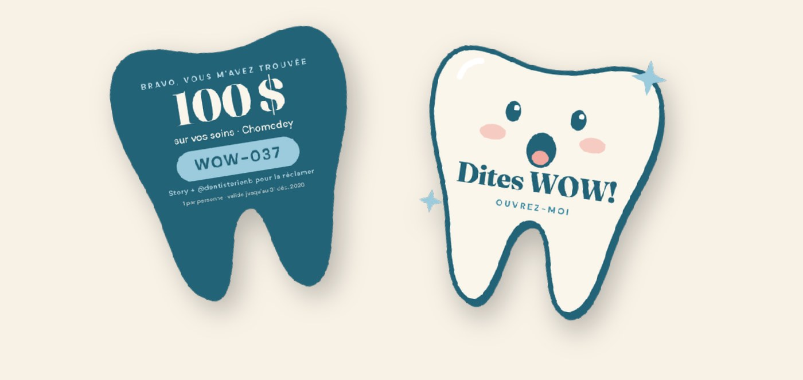
La chasse aux 100 dents
100 cartes-dents dépliantes de 100 $ chacune, cachées partout à Chomedey. On publie une story qui identifie la clinique pour réclamer la sienne, puis on l’apporte à sa première visite. L’une de vos quatre campagnes en fait de la portée.
100 cartes numérotées, conçues et déposées par TGS
Une campagne dédiée — chaque carte suivie de la trouvaille au fauteuil
30JOURS
CLAUSE DE SATISFACTION · LES DEUX FORFAITS
Pas satisfaits après le premier mois? Vous partez.
Si le premier mois ne vous convient pas, mettez fin à votre forfait par avis écrit avant le début du deuxième mois — sans pénalité ni frais; les mois deux et trois ne sont jamais facturés. Vous gardez tout ce qui a été créé.
Préparé pour Dentisterie Nancy Beaudoin — Stratégie de croissance de la patientèle
11
09 — Prochaines étapesNancy Beaudoin × TGS
Par où on commence
Six étapes jusqu’au premier nouveau patient attribué à une campagne.
01
Choisir le forfait, partager le point de départ
Standard ou The Golden Standard. Puis, environ combien de nouveaux patients vous voyez par mois, comment ils vous ont trouvés, combien de consultations implants et Invisalign vous faites — et ce que vos pubs Google rapportent.
02
Donner les accès
Meta Business Manager, le compte publicitaire, les pages Instagram et Facebook, le site Web pour la nouvelle page de consultation et le pixel — et Google Ads en lecture seule, pour que les deux canaux soient présentés ensemble.
03
Confirmer les offres
Les services qu’on met de l’avant, les conditions et la date de fin de la consultation gratuite et du blanchiment avec Invisalign, si vous acceptez les patients du RCSD, et les règles des 100 cartes.
04
Nommer votre personne-ressource
Qui fait le suivi des demandes et approuve le contenu chaque semaine. Le budget publicitaire est déjà couvert par votre forfait.
05
Réserver les premiers tournages
Deux demi-journées à la clinique ce mois-ci — dont une un lundi soir — les lieux, l’équipe, CEREC et le scanner, plus des patients heureux d’être filmés, avec leur consentement écrit.
06
Approuver le calendrier d’octobre
Approuver le mélange pour que la production et les premières campagnes démarrent le 1er.
On se déplace. Les tournages se font selon votre horaire — un matin tranquille ou après le dernier patient — pour qu’aucun soin ne soit interrompu par la caméra. Chomedey est à quelques minutes de notre studio sur Chabanel.